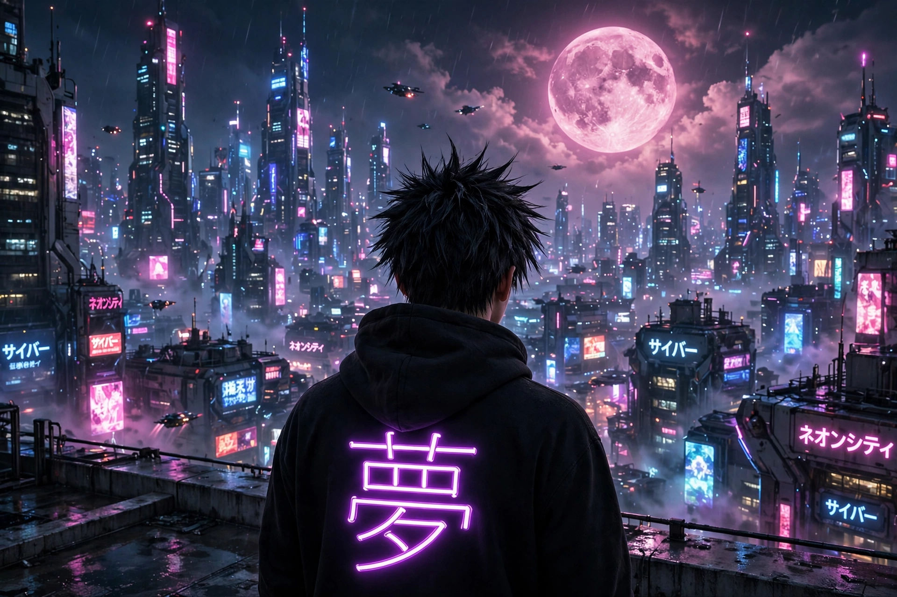
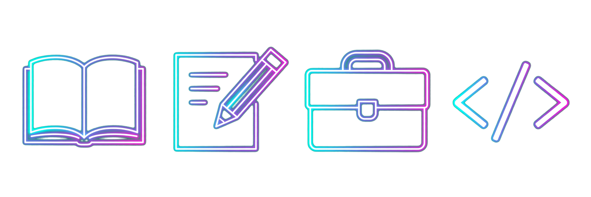
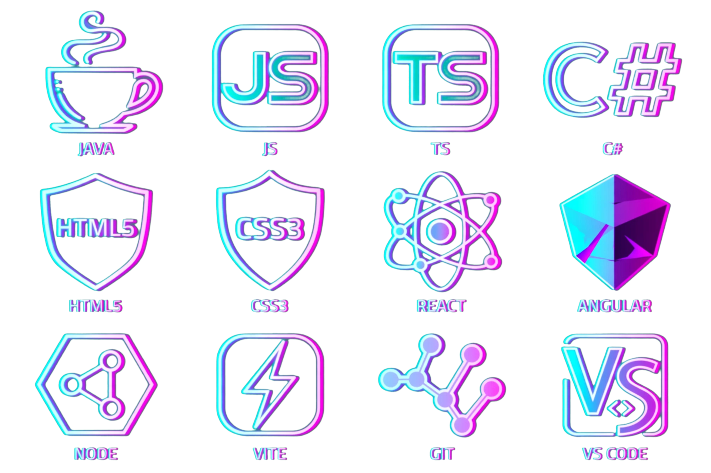

Olá, me chamo
Desenvolvo projetos para aplicar meus conhecimentos em Java, programação orientada a objetos e desenvolvimento de software. Busco uma oportunidade para evoluir tecnicamente e contribuir com projetos reais.
Sou Bruno Lessa, estudante de Engenharia de Software e desenvolvedor em formação, com foco em Java.
Concluí os cursos Java Programming I e Java Programming II, oferecidos pela Universidade de Helsinque por meio do MOOC.fi. Atualmente, estudo Spring Boot para avançar no desenvolvimento backend Java.
Também mantenho uma rotina contínua de estudos de inglês, com o objetivo de alcançar a fluência e ampliar minhas possibilidades de aprendizado, acesso à documentação técnica e colaboração profissional.
Busco uma oportunidade de estágio ou desenvolvedor júnior, preferencialmente remota. Também considero oportunidades presenciais no Rio Grande do Sul e em Santa Catarina, onde tenho suporte.
Formação acadêmica, cursos e evolução contínua

Java é o foco atual dos meus estudos e projetos. Spring Boot e inglês fazem parte do meu processo de aprendizado contínuo.

Estou estudando Spring Boot para aprofundar meus conhecimentos em desenvolvimento backend Java. Meu objetivo é avançar na construção de APIs REST, persistência de dados e arquitetura de aplicações, aplicando esses conhecimentos em novos projetos.
Inglês — aprendizado contínuo
Estudo inglês de forma contínua, com o objetivo de alcançar a fluência ao longo do tempo. Quero ampliar meu acesso à documentação técnica, aos conteúdos de aprendizado e às oportunidades de colaboração com equipes internacionais.